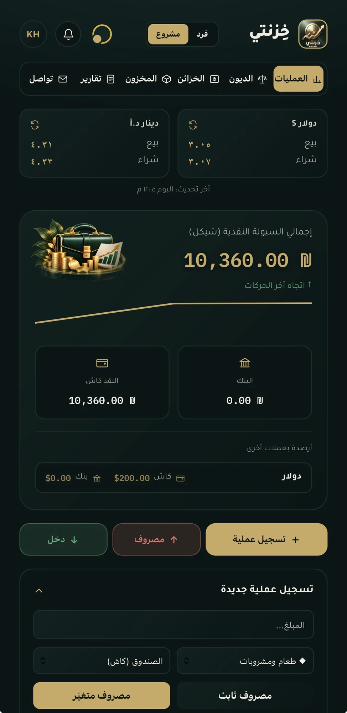
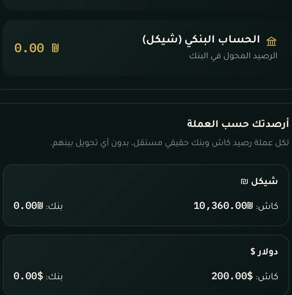
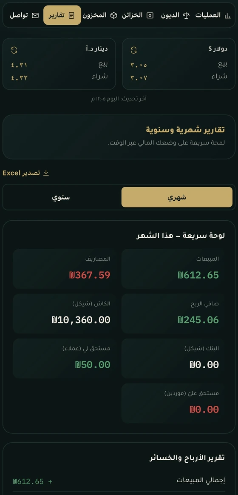

01 / 03
KHZNTIخزنتي
Simpler management. A clearer picture.
- 01Operations · العملياتRecord a transaction once
- 02Vaults · الخزائنCash and bank, per currency
- 03Reports · التقاريرThe month at a glance




01 OPERATIONS · NEW TRANSACTION
02 VAULTS · BALANCES
03 REPORTS · SUMMARY